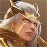
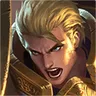

Shouyue
Farm · Marksman
Tier BCara Melawan Shouyue
1) Pas Shouyue pakai skill 2, terjang ke deketnya biar dia batalin. 2) Skill area bisa kena Shouyue yang lagi nyamar.
Counter Alami Shouyue
Heal Cai Yan balikin HP yang dikikis tembakan Shouyue, dan skill 2-nya bisa nge-control Shouyue.
Skill 2 Mozi jangkauannya jauh dan kasih control, jadi motong bidikan Shouyue sekalian ngikis HP-nya.
Perisai Dunshan nahan semua skill dan basic attack Shouyue, jadi tembakan jarak jauhnya gak nyampe ke tim.
Skill Nuwa jangkauannya jauh. Pas Shouyue lagi ngebidik dan posisinya kelihatan, ult Nuwa bisa kena dia.

Shouyue mengandalkan one-shot skill 2 dari jauh — Hou Yi yang menyerang dari jauh dengan basic attack bisa menekannya terus dan membunuhnya sebelum dia sempat membidik.
Rekomendasi Item Lawan Shouyue
Shouyue sniper yang one-shot dari jauh dengan skill 2-nya — Destiny menyelamatkanmu sekali; terjang ke dekatnya saat dia memakai skill 2 agar dia membatalkannya.
Jangan Pick Melawan Shouyue
Alat vision Shouyue ngebongkar stealth Gao Changgong, jadi dia susah nyergap.
Shouyue susah dijangkau ult Liang, dan jangkauannya cukup buat bunuh Liang duluan.

Jangkauan lebih jauh dari bruiser melee dan nge-poke dia keluar dari wave.
Erin susah bertahan hidup — Shouyue yang one-shot dari jauh dengan skill 2 bisa membunuhnya sebelum dia sempat membalas.
Yango mengandalkan boneka yang tidak mendapat perlindungan — Shouyue yang one-shot dari jauh bisa menghancurkan bonekanya dan memaksanya pingsan.